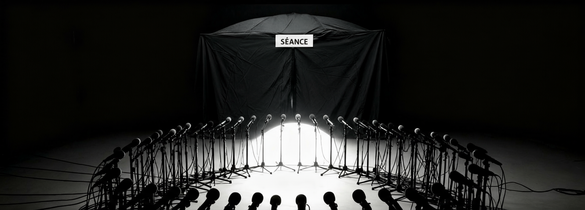

Exhibition
Binke Liu -- Blake

Axis Drift: Go Outside – Sensing, Ghost-Following, Soundmapping is a geocritical experiment that investigates the spectral dimensions of Beijing’s Central Axis and the possibility of perceiving nonhuman presence in the urban fabric. Rather than treating the city as a purely material or functional space, the project reframes it as a haunted environment, layered with memories, echoes, and absences. It adopts methods of psychogeographic drifting, field recording, and nonhuman listening in order to register vibrations and traces that conventional human-centered observation often overlooks. The project unfolds across four interrelated outcomes. The Exhibition presents immersive installations in which field recordings, speculative maps, and spectral imagery are combined to create a haunting atmosphere that invites visitors to sense the unseen. The Publication expands the theoretical framework by bringing together essays, diagrams, and critical reflections on geocriticism, hauntology, and the aesthetics of spectral urbanism, serving both as documentation and as an independent artifact. The Music Album translates collected electromagnetic signals, geophonic vibrations, and processed urban soundscapes into compositions that operate at the border of experimental electronic music and environmental sound art, turning inaudible frequencies into affective experiences. Finally, the Coding outcome provides open-source scripts and interactive prototypes—ranging from soundmapping interfaces to generative visualizations—that extend the project into the digital domain and allow others to remix, reuse, and reimagine the methodology. Together, these four outcomes articulate Axis Drift as both a research platform and an artistic proposition. They show how sensing, drifting, and ghost-following can be mobilized as critical strategies to rethink urban space, not as a neutral background for human activity, but as a spectral entity that remembers, mourns, and resonates beyond the visible.